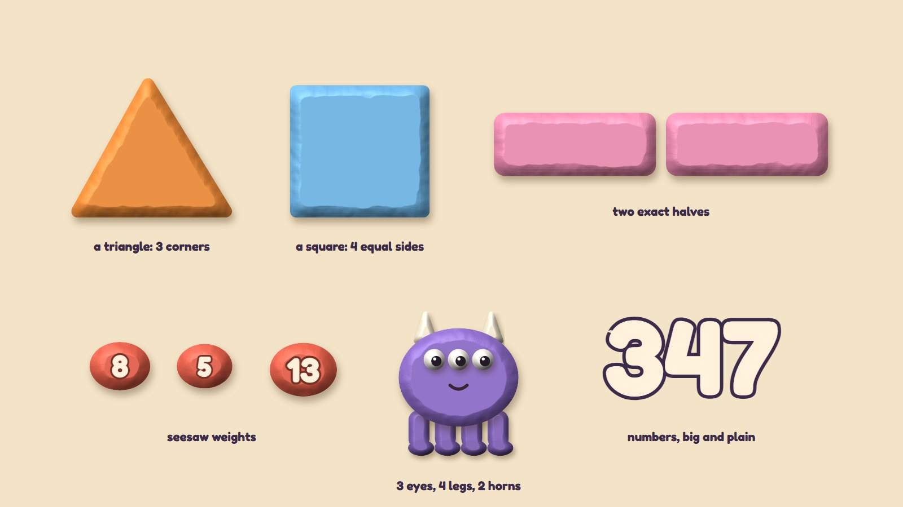

How Clay Bay would be built
The learning engine is the first plan's (the skill map, five steps for every skill, the feedback rules, stars for first tries, reviews, the parents' page; see its technical page). This page covers what is new here: the clay look, the hands-on moves, how answers are checked and what is saved.
Three layers of clay
| What | How it is made | Why |
|---|---|---|
| Scenes | Painted pictures (Gemini drafts now; an illustrator or cleaned-up drafts later), one per place, with soft parallax layers where needed. | Rich clay texture costs nothing at run time: it is just a picture. |
| Characters | Each friend and the avatar is drawn as separate lumps (body, eyes, pupils, arms, legs, clothes) and rigged in Rive with bones and soft mesh bending. | Clay figures are built from lumps anyway, so they come apart cleanly; squash and stretch suit clay. |
| The maths | Shapes, critters, cakes, weights, number lines and digits are drawn by the app, with one shared "clay" shading (a soft rounded edge, a fingerprint texture, a highlight and a shadow). | Counts and sizes must be exact and change every round; drawing them keeps them exact. |


The stop-motion feel
- Characters move on twelve steps a second, like real stop-motion, while the screen itself stays smooth (60 a second) so touches feel instant.
- A gentle "boil": two or three slightly different fingerprint textures swap now and then, so the clay looks hand-made.
- Every touch leaves a soft dent that slowly fills back in. It is drawn on a light layer over the scene and costs very little.
- Reduced motion (a setting): no boil, no camera moves, dents fade at once.
Eight moves, each with a one-finger way
| Move | How it is recognised | One-finger way |
|---|---|---|
| Press with several fingertips | Touches that land within 0.3 seconds count as one press; touches closer than 8 mm merge; a large contact (a palm) is ignored. | tap one at a time |
| Pull out | A drag that starts on the clay's edge and moves outward more than 20 px. | the same drag with a mouse |
| Rub smooth | Three or more back-and-forth strokes over a corner. | tap the corner |
| Swipe to cut | A quick straight stroke across the whole object; the cut follows the best straight line through it. | drag a cut line, or tap two guide dots |
| Squish / pinch apart | Dropping one piece onto another joins them; two fingers spreading on a piece splits it. | drag one onto the other; tap and choose a split |
| Stretch a corner | A drag on a block's corner handle snaps to whole rows and columns. | + and − buttons |
| Twist | Two touches turning around their middle; snaps to quarter turns. | the ↻ button |
| Pinch to zoom | Two touches moving apart or together; marks appear when they are at least 24 px apart. | + and − buttons, arrows |
The world checks, by exact rules
| Activity | The check | Tolerance |
|---|---|---|
| Poke Pals | number of Peeps = number of seats | exact |
| Pull-a-Shape | corners counted as turns sharper than 20°; side lengths in dot spaces | exact on the dots |
| Critter Maker | parts counted by kind against the card | exact |
| Seesaw Twins | left total = right total; the tilt grows with the difference, up to 12° | exact |
| Parade Squares | rows × columns = number; no empty squares, nobody left over | exact |
| Fair Slices | pieces' areas compared after the cut | within 5% (10% at age 7) |
| Zoom Dig | dig position against the target | within half a mark at the current zoom |
| Roll-a-Giant | answer and time per fact | shiny: first try, ≤ 3 s (4 s Grade 1), on 3 different days |
Small recipes, not pictures
A critter
Its body shape, colour and the number of each part, plus a name: a few dozen bytes. The app draws it again from the recipe, so a bay can hold hundreds.
The day
Which stops are done, the egg's warm stones, the Hatch's answers and points, today's hatchling recipe, and any half-done question exactly as it was.
Speed
Every fact's last ten answers and times (for the Scale Coat), and one number per day for Giants' Row.
Every activity plays itself
Each activity has a test robot that reads the question (never the answer stored in the code), makes the moves a child would (including several-finger presses, pinches and swipes), checks where everything landed, and makes one planned mistake per session to check the tip. The robots run on every change, at every age.